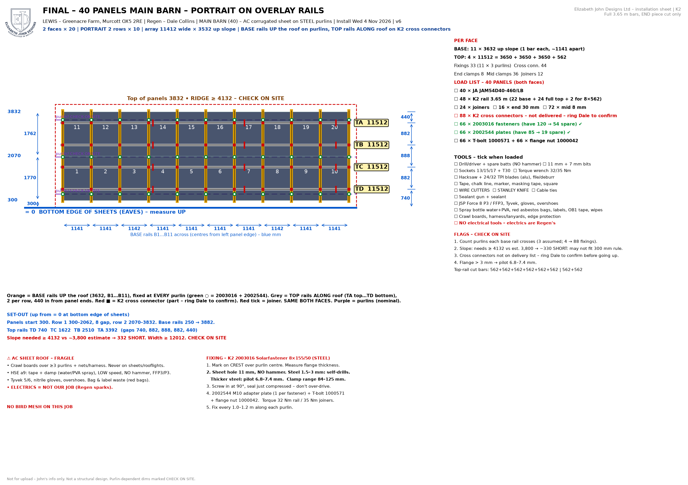
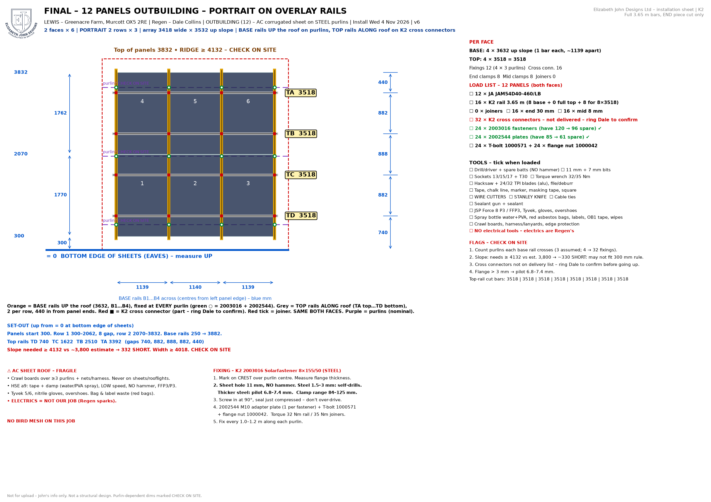
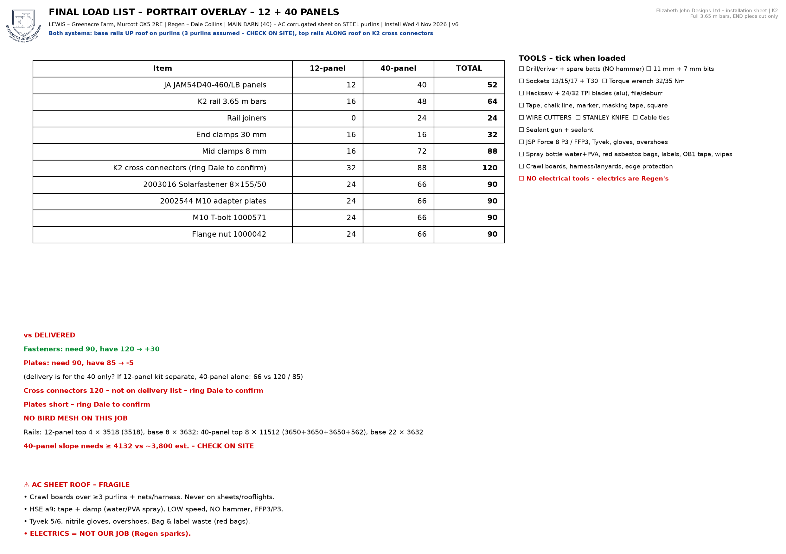
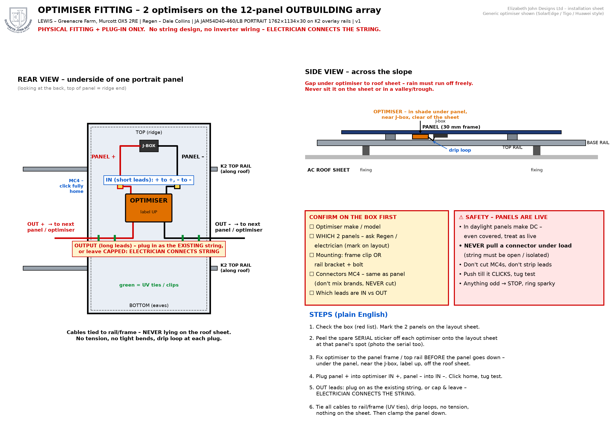

Lewis – Greenacre Farm, Murcott OX5 2RE · 4–6 Nov 2026 · FINAL v6
Overlay rail system – ALL PORTRAIT (40 + 12).
CHECK ON SITE: slope ≥ 4,132 mm (bottom edge of sheets to ridge) & purlins per base rail.
5 adapter plates short and ~120 K2 cross connectors not delivered – ring Dale to confirm.
No bird mesh on this job. Electrics = Regen's.
← Back to the app Full pack (PDF)



Optimisers (12-panel outbuilding): fit & plug-in only – electrician connects the string. Confirm model / which 2 panels with Regen.
